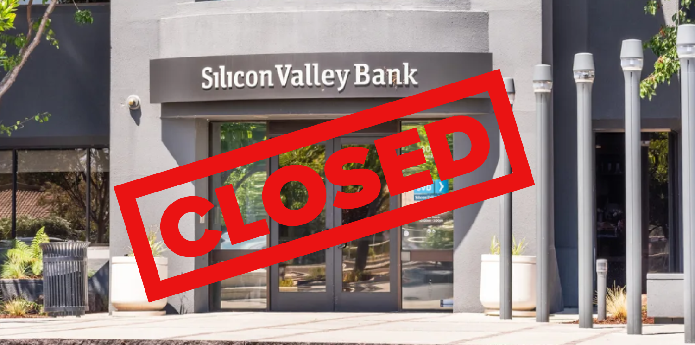
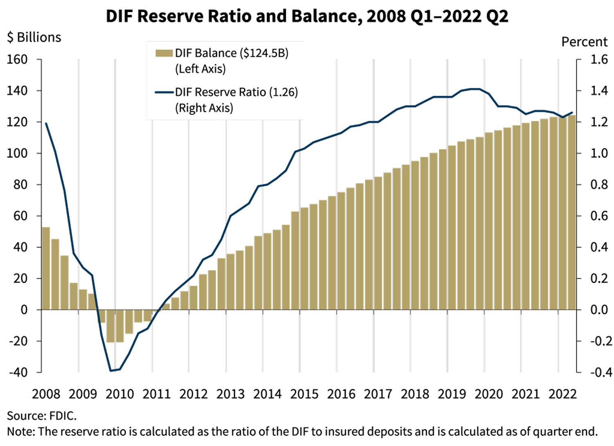
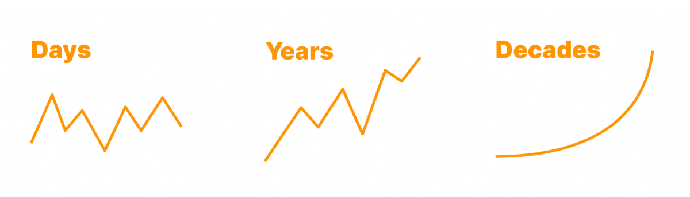
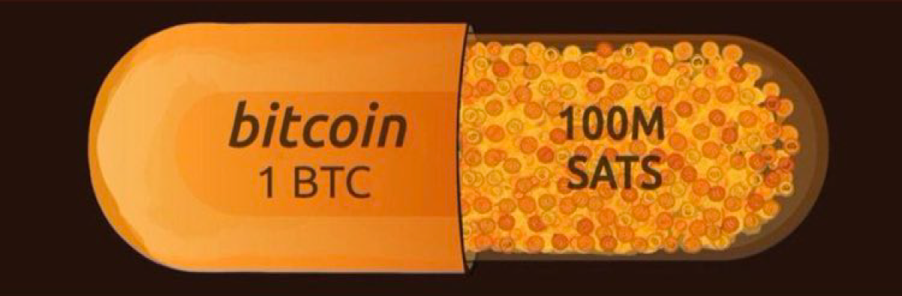

BITCOIN JEST ODPORNY PANIKĘ BANKOWĄ
ALE TWÓJ
BANK MOŻE BYĆ
CZYM JEST
PANIKA BANKOWA?
Panika bankowa ma miejsce wtedy, gdy zbyt wiele osób próbuje wypłacić pieniądze z banku w tym samym czasie.
Jeśli banki nie mają wystarczającej ilości pieniędzy, aby pokryć wypłaty, mogą całkowicie upaść w przypadku paniki bankowej.
Jak dochodzi do runów na banki?
Nasz system bankowy to „rezerwa cząstkowa”, co oznacza, że banki nie tylko trzymają Twoje pieniądze w skarbcu i czekają, aż je wydasz lub wypłacisz.
Zamiast tego Twój bank bierze Twoje pieniądze i pożycza je lub inwestuje. Może to spowodować zablokowanie Twoich pieniędzy na długi okres czasu, mimo że bank obiecuje możliwość ich wypłaty w dowolnym momencie.
Co więc się stanie, jeśli spróbujesz wypłacić pieniądze, gdy bank już je pożyczył lub zainwestował?
Nie stanowi to problemu, jeśli jesteś jedyną osobą próbującą się wycofać. Bank po prostu weźmie cudze pieniądze i wręczy je Tobie. Ale co się stanie, gdy zbyt wiele osób spróbuje wycofać się w tym samym czasie?

Wiele osób właśnie dowiedziało się, kiedy doszło do runu naprowadzony w Silicon Valley Bank w marcu 2023 r.
Bank inwestował pieniądze swoich klientów w obligacje, które były blokowane na okres do 30 lat. Co gorsza, wartość tych obligacji ostatnio spadła, więc Silicon Valley Bank nie mógł ich po prostu sprzedać, aby zdobyć pieniądze deponentów. Byli niewypłacalni. Nie mieli wystarczającej ilości pieniędzy, aby pokryć wypłaty swoich deponentów.
Gdy dowiedziało się o tym więcej osób, problem się tylko pogorszył. Otrzymano więcej próśb o wypłatę, ale wiele z nich nie zostało przetworzonych. Tysiące firm zdało sobie sprawę, że z powodu upadku banku nie będą w stanie zapłacić swoim pracownikom.
Wkroczył FDIC (Federalna Korporacja Ubezpieczenia Depozytów) i zgodził się na zabezpieczenie deponentów w całości. Problem rozwiązany? Nie dokładnie...
CZY UBEZPIECZENIE FDIC CHRONI MOJE PIENIĄDZE?
Ubezpieczenie FDIC ma na celu ochronę deponentów banku na wypadek upadku banku. Depozyty są ubezpieczone do kwoty 250 000 USD na deponenta. Brzmi świetnie, prawda?
Nie zupełnie. Jeśli bank upadnie, skąd FDIC weźmie pieniądze? Mają fundusz ubezpieczeniowy, w którym znajduje się 125 miliardów dolarów.
To brzmi jak dużo pieniędzy, dopóki nie porównasz tego z kwotą ubezpieczanych przez nich depozytów: prawie 10 bilionów lub 10 000 miliardów dolarów.

FDIC pokazuje nawet na swojej stronie internetowej, że ma tylko tyle pieniądze w swoim funduszu ubezpieczeniowym na pokrycie nieco ponad 1% depozytów.
CZY ISTNIEJĄ BANKI, KTÓRE NIE STOSUJĄ REZERWY CZĘŚCIOWEJ?
Niektóre banki starały się być „bezpiecznymi bankami”, które nie pożyczają ani nie inwestują środków deponentów. Jednak ich aplikacje zostały odrzucone przez Rezerwę Federalną, co oznacza, że nie mogą legalnie działać jako banki.
Ponieważ zablokowano im możliwość działania, nie ma dziś banków, które nie korzystałyby z rezerwy cząstkowej.
Na szczęście istnieje sposób, aby zrezygnować z systemu rezerwy cząstkowej, będąc własnym bankiem. Nie, nie mówimy o wpychaniu gotówki pod materac – jest ona nadal podatna na inflację.
Mówimy o Bitcoinie: nowym systemie finansowym, który pozwala Ci być własnym bankiem.
CZYM JEST
BITCOIN?
Bitcoin to dwie rzeczy: cyfrowy pieniądz i sieć komputerowa. Możesz wysyłać bitcoiny (cyfrowe pieniądze) bezpośrednio do innych osób korzystających z sieci Bitcoin (sieci komputerowej).
Bitcoin to radykalnie nowy sposób przechowywania wartości i przeprowadzania transakcji. W przeciwieństwie do zwykłych sieci finansowych, sieć Bitcoin może działać bez władz centralnych i zaufanych administratorów. To sprawia, że Bitcoin jest pierwszym w historii otwartym i ponadgranicznym pieniądzem.
Bitcoin to cyfrowy pieniądz, który daje Ci pełną własność nad swoim majątkiem. Po raz pierwszy w historii ludzkości każdy może posiadać naprawdę rzadkie aktywa, których użycie nie wymaga pozwolenia i których nie można skonfiskować, jeśli są właściwie przechowywane.
Bitcoin można wysłać w dowolne miejsce na świecie, szybko i tanio. Nie ma potrzeby stosowania usług trzeciej strony, takiego jak bank.
Bitcoin pozwala każdemu bezpiecznie przechowywać swój majątek bez obawy, że rząd go ukradnie lub zdewaluuje jego wartość poprzez drukowanie pieniędzy.
Rządy na całym świecie mogą wydrukować więcej papierowych pieniędzy, ale nikt nie może wydrukować więcej bitcoinów.
Możesz łatwo samodzielnie zarządzać swoim Bitcoinem, aby przejąć nad nim pełną kontrolę, zapewniając pełny dostęp do mocy Bitcoina. Jeśli możesz pobrać aplikację, możesz samodzielnie zarządzać Bitcoinem i przechowywać swoje bogactwo, nie polegając na kimkolwiek innym.
Bitcoin to lepszy pieniądz.
CZY BITCOIN MOŻE OCHRONIĆ MNIE PRZED RUNAMI BANKOWYMI?
Tak, Bitcoin to system pełnej rezerwy. Runy bankowe są niemożliwe w przypadku Bitcoina, o ile wypłacisz swoje bitcoiny do swojego portfela i nie zostawisz go na giełdzie.
Jeśli możesz pobrać aplikację, możesz samodzielnie zarządzać swoimi bitcoinami i być swoim własnym bankiem!
Nie musisz się już martwić inflacją ani paniką bankową – masz kontrolę nad swoimi pieniędzmi.
SŁYSZAŁEM, ŻE BITCOIN JEST BARDZO ZMIENNY. CZY TO BEZPIECZNE?
W krótkim okresie wartość Bitcoina ma tendencję do wahań, ale obserwowana na co dzień zmienność „zanika” w dłuższej perspektywie.

Bitcoin z biegiem czasu staje się coraz mniej zmienny. Im więcej osób używa Bitcoina jako długoterminowego konta oszczędnościowego, tym bardziej jego wartość się stabilizuje.
Wiele osób decyduje się na przechowywanie wartości w Bitcoinie przez wiele lat, jako bezpieczny sposób minimalizacji ryzyka zmienności i ochrony swojej siły nabywczej w czasie.
W niektórych krajach, takich jak Wenezuela, Sudan, Liban, Syria, Argentyna, Turcja i wielu innych, wartość lokalnej waluty rośnie tak szybko, że Bitcoin jest postrzegany jako bardziej stabilny sposób na oszczędzanie pieniędzy.
NIE STAĆ MNIE NA BITCOINA
Podobnie jak złotówka składa się ze 100 groszy, tak bitcoin składa się ze 100 000 000 (100 milionów) satoshi.

Nie musisz posiadać całego bitcoina. Większość ludzi po prostu posiada trochę satoshi. Satoshi to ułamki bitcoina. Na przykład, jeśli 1 cały bitcoin kosztuje 50 000 złoty, to za 1 złotówka można kupić 2000 satoshi!
CZY BITCOIN BYŁ KIEDYKOLWIEK ZHAKOWANY?
Być może słyszałeś w wiadomościach o „hackowaniu Bitcoina”. Większość ludzi czyta te artykuły i wierzy, że sieć Bitcoin została zhakowana, choć tak nie jest.
Co to jest sieć Bitcoin? Cóż, pomyśl o Bitcoinie, walucie, jak o pociągu. Sieć Bitcoin to tory kolejowe.
Kiedy czytasz w wiadomościach o włamaniu do Bitcoina, czytasz o zhakowaniu depozytariusza. Depozytariusze to firmy, które przechowują dla Ciebie Twoje bitcoiny. Wiąże się to jednak z ryzykiem: utratą bitcoina, gdy firma źle nim zarządza lub zbankrutuje. Zdarza się to często, dlatego lepszym pomysłem jest samodzielne kontrolowanie swojego Bitcoina.
Piękno Bitcoina polega na tym, że możesz nim samodzielnie zarządzać. Oznacza to, że możesz przejąć pełną kontrolę nad swoim Bitcoinem, pobierając własny portfel Bitcoin. Może to wydawać się skomplikowane, ale jest to tak proste, jak pobranie aplikacji.
Sieć Bitcoin nigdy nie została zhakowana i jest najbezpieczniejszą siecią komputerową na świecie. Nawet jeśli połączysz wszystkie serwery Facebooka, Amazona, Apple, Netflix i Google, sieć Bitcoin nadal byłaby potężniejsza i skuteczniejsza bezpieczne.
CZY BITCOIN NIE ZUŻYWA DUŻO ENERGII?
Bitcoin wykorzystuje energię do zabezpieczenia sieci i gwarantuje, że posiadany Bitcoin nie będzie mógł zostać Ci odebrany.
Bitcoin zużywa znaczną ilość energii i jest to świetna rzecz z wielu powodów.
— Bitcoin to najbezpieczniejsza sieć komputerowa na świecie.
— Bitcoin pomaga ustabilizować sieć energetyczną w Teksasie poprzez wydobycie bitcoinów.
— Bitcoin zmniejsza emisję z odwiertów ropy.
— Bitcoin nadal zużywa mniej energii niż Amerykanie używają na lampki na Boże Narodzenie.
Możesz przeczytać o tych niesamowitych sposobach, w jakie Bitcoin ulepsza świat na naszej głównej stronie internetowej pod adresem bitcoin.rocks